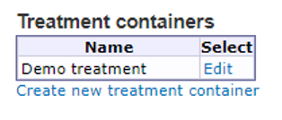
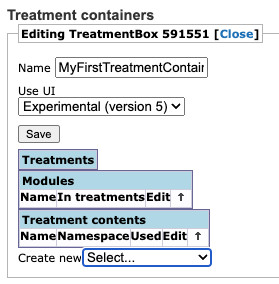
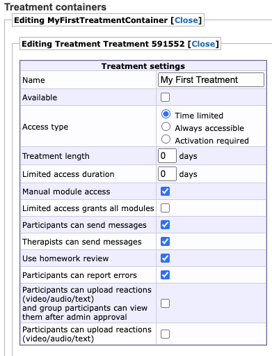
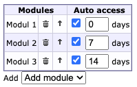

Chapter 13 Create new treatment
BASS is designed to allow you to conduct mental healthcare and psychological studies through online channels. The main feature to achieve this in BASS, is the treatment.
A treatment is built by combining treatment modules into sections. A module is in essence a website, contained within the framework that BASS provides. This allows you the flexibility to build your treatment according to your organization’s needs and wishes.
Treatments are accessed by the Treatment containers option in the main menu.
The first thing you will see in this view is a table showing you all the existing treatment containers in the current project. If no treatment containers have been created, the table will be empty.
You can edit existing treatment containers by clicking the Edit link in the column to the right.
To create new treatment containers, click the Create new treatment container link below the table.

Important note: Treatment containers in BASS are frameworks that contain all the other components that make up a treatment, such as treatment modules.
13.1 A typical treatment structure
A treatment container is the abstract structure that holds all the content of a treatment or a series of treatments. A typical treatment is built up by several modules, often arranged in a specific order. A typical module consists of:
- One module text
- (0 - several) worksheets
- One homework
Hint: Whenever you create a new treatment, it is advisable to plan the structure from the beginning, so as to get a sense of both the magnitude of the sub-content and the flow of the treatment.
13.2 Creating a treatment container
In the Treatment containers view, click the Create new treatment container link below the table. This opens the editing view of the new treatment container. You can close the container by clicking Close at the top to return to the table listing all existing treatment containers. Don’t forget to save any changes first, by clicking the Save button.

Give your treatment container a name in the Name box, and select Experimental (version 5) in the field Use UI and save it.
Note: Standard (version 4) should only be used if you have specific reasons for it. This could for example be if you are reusing material from old treatments that aren’t compatible with the new user interface.
You can now add treatments, modules and specific contents such as texts, worksheets and homeworks to your treatment container, by using the dropdown menu at the bottom of the page.
Hint: Are you creating several treatments in your study? It might be preferable to create them within the same treatment container if you are planning to reuse treatment content for both treatments. However, if the treatment content is completely different between the treatments, it might be easier to create them in separate treatment containers to avoid mixing content up.
13.3 Creating a treatment
Regardless whether you just created a new treatment container or chose to edit an existing one, you can add a new treatment to it, by selecting Create new… [Treatment] in the dropdown menu ar the bottom of the view. This opens the editing view of the new treatment. You can close the treatment by clicking Close at the top of the view to return to the corresponding treatment container. Don’t forget to save any changes before doing so, by clicking the Save button.
Give your treatment a name, by typing it into the Name box and save it.

Before adding in modules with content to the treatment, there are a few Treatment settings to consider.
Available By checking this box, the treatment can be assigned to participants.
Important note: Any participants assigned to the treatment will automatically and continuously have access to all its content unless you limit the access with the settings below.
Access type
Always accessible means that the full treatment content is available to the participant as soon as it is assigned.
Activation required box is checked, the treatment has to be manually activated for a participant before its content becomes available.
Time-limited access lets you specify a time window for a participant when the treatment is active and its content available. Default settings for this time window can be defined by specifying the number of days in Treatment length, and limited access duration. This time window is later specified in the participant view, under the Treatments tab, by setting the start date, with the possibility to adjust the default time if needed.
Treatment length If the treatment is to be available for a certain number of days after it has been activated, you can set that value in the Treatment length box. You can always override/customize the treatment availability for a specific participant in the Treatment access tab of the participant.
Limitad access duration Limited access means that the participant has access to the treatment modules but can no longer communicate with the therapist in the chat. Specify how many days after the end of the treatment the limited access should be available.
Manual model access Check this box to be able to activate each module in the treatment separately for a participant. This is useful for when you want to make sure participants are finished with one module before starting with the next one, or when you want to give a staggered access to modules, eg. a new module activated every week. If this is not checked all modules will be accessible from the start.
Participants can send messages Checking this box makes it possible for participants to send messages to their therapists during an active treatment, by using the built-in messaging feature in BASS.
Therapists can send messages Checking this box makes it possible for therapists to send messages to their participants during an active treatment, by using the built-in messaging feature in BASS.
Hint: These default settings can also be overridden for specific participants under the participant’s Treatment access tab.
Use homework review Checking this box has two implications:
- First, a participant can choose to either save a homework (to be able to work on it later), or send it to the therapist (which marks it as finished and locks it, disabling further editing).
- Second, an icon will be displayed in the Homework column of the Participant search view, that flags whenever a participant has submitted a finished homework and thus notifies the therapists of the fact at a glance.
Participants can report errors Enables a menu option in the participant interface where the participant can report any technical issues on the platform. The participant will be flagged in the participant list views and the problem description entered by the participant will visible in the participant’s Flags tab. As with other flags notifications will also be sent to database administrator daily. See Chapter 7 for more information on notification emails.
Modules This is where you connect modules to your treatment and define when they should be accessible.
If you have not yet created any modules this will be empty, without any modules to choose from.
If you have created modules or are working in an established database with pre-existing treatment modules, they will show up in the Add dropdown menu. Choose a treatment module in the dropdown menu to add it to your treatment. Remove a module from the treatment by clicking the bin icon. Change the order of the modules using the arrow icon.
If you have selected Manual module access above you can also define when the modules should be activated for a participant by default under Auto access. If you deselect the module it will defaulted as not accessible. If it is selected it will be accessible according to the information in the textbox; 0 means it will be accessible from the start, 7 means it will automatically activated on the 7th day of the treatment etc.

Note: Clicking the bin only removes the connection between the Treatment and the Module. The Module is still avilable to connect to other treatments
Pages This option lets you add a treatment content as a separate menu page in the participant’s view. For example, this could be a sleep diary which the participants are to work with for the duration of their treatment, or any similar worksheet that is not part of any particular module. It may also be an instructions page, or a page with a collection of links to downloadable treatment content, such as a PDF document.
Welcome screen Here, you may type in content to show a custom welcome screen/home page in the participant’s view. This can contain test, images, videos etc and you can use markdown or html. There are a handful of instructions given on the page itself, to show conditional text or content.
Examples:
By using the<ongoing>*YourContentHere*</ongoing>tag, you can specify the content enclosed in that tag to show when the treatment is ongoing. This is, in essence, the standard text for your home page.
By using<daysleft>*YourContentHere*</daysleft>you can set content to show only as long as the participant has more than one day left of the treatment. When that time has passed, this content will not be shown.
By using<lastday>*YourContentHere*</lastday>you can set the content to only show on the last day of access. This might be a thank you and/or good luck text, or something similar or appropriate for your treatment.
By using<limited>*YourContentHere*</limited>you can set content to only show when the participant has only limited access to the treatment. For example, this could simply be a text informing the participant of the limited access and the changed it entails.
Using<limiteddaysleft>*YouContentHere*</limiteddaysleft>you can set conditional content to be shown as long as the participant has more than one day left of their limited access.
Using<limitedlastday>*YourContentHere*</limitedlastday>you can set conditional content to be shown on the participant’s last day of limited acces, such as thanking them for their time and effort, and whishing them good luck.
13.4 Treatment Modules
Now, let’s create modules for our treatment. To do this, click Close at the top of the page to exit the treatment settings and return to the Treatment view for your treatment. Here, click the dropdown menu at the bottom of the page and select Module. You will be taken to the settings page for the module. Here, you can give it a name, and tags if you wish. Below these two boxes, there are three dropdown menus:
- Main text is where you assign a treatment content to be the main text of the module. This is usually the instructions, a psycho-educational text and other information relevant to the module.
- Worksheets is where you assign a treatment content to be a worksheet connected to the module. You can assign multiple worksheets to a single module. Worksheets can be worked with and iterated upon by the participant.
- Homework is where you assign a treatment content to be the homework of the module. You may only assign one homework per module. Homework can not be iterated upon by the participant once it has been submitted for review and subsequently approved by the therapist. If the therapist returns the homework to the participant, they’re able to make changes.
If you’re working in a newly created database, leave the main text, worksheets, and homework dropdown menus empty, since there is no treatment content to assign yet. If you’re working in a pre-existing treatment with completed treatment content ready for use, add them as appropriate. Click Close at the top of the Module settings page to close it and return to the treatment overview. Remember to go in to your treatment to add your module to the treatment. See above.
13.5 Treatment Content
So, let’s create some treatment content to add to our module. The treatment content is where most of the work goes into treatments. This is where you add text content, media content, forms and other input fields. You have a large degree of freedom to design your own treatment content and you can have it be as simple or as advanced you want or your knowledge of HTML, CSS, and if you’re an advanced user, JavaScript dictates. We will be including some templates of the most commonly used HTML in this manual that you can copy and paste into your treatment content. To build a “complete” module with main text, one worksheet, and a homework, we’ll need to create three separate treatment content units.
We will start by creating the main text one and work onwards from there in a “bottom up” fashion where we lay the foundation first, and add the complementary content when that’s done.
- So, to add a treatment content navigate to your treatment if you’re not already there. From the Create new dropdown menu at the bottom of the page, select treatment content. This will take you to the settings and editing page of the treatment content. Start by giving it an appropriate name in the box labeled Name at the top, and click Save.
- Data namespace is recommended to leave as is (auto-generated) unless you have a clear and specific reason to change it. The name space is used by BASS to identify the treatment content and save the information contained within in.
- Use markdown+HTML (else only HTML) lets you decide whether to use HTML and Markdown for formatting, or only HTML. We recommend leaving this checked, unless you’re confident in your HTML skills and do not wish to have any Markdown syntax potentially interfering in your HTML code.
- Navigation mode lets you select the manner in which your content is presented. Click the corresponding radio button to select the mode you wish to use.
- Indexed by H1 tags is the default option and presents the content as a long continuously scrollable page. You can visually divide it into cards by using the HTML tag
<h1>YourHeading</h1>, or by using the Markdown syntax #YourHeading. - Split into pages (use
\PAGEBREAKat the top level) lets you divide the content into individual pages, PowerPoint-style. As per the instruction in the option text, use\PAGEBREAKwhere you wish to insert a page break and switch to a new page.
- Indexed by H1 tags is the default option and presents the content as a long continuously scrollable page. You can visually divide it into cards by using the HTML tag
- Content can be completed multiple times using tabs…. Checking this option makes your whole treatment content into tabbed content. For example a weekly diary can be repeatable beyond the first week, without having to set up 10 individual weeks by coding them by hand. The participant can simply click a plus sign to add a new tab, with a fresh week ready to be filled in.
Hint: If you only want part of the treatment content to be tabbed, you can instead of checking this option, use a div element with class=”tabbed” as following
<div class=”tabbed”>*YourContent*</div>. This way you can have some general text with instructions first which is always displayed and then show your tabbed content.
Note: If you are working on an old treatment using the UI Standard (version 4) you will also see the following options:
Path to file lets you assign a file to be the content of the treatment content instead of a text. By clicking the Browse server button you will be taken to the internal file manager of your BASS database, from where you can set up a folder structure. This server browser is somewhat limited in comparison to the insert link version in that you cannot upload any files through this version, only select already existing files to link to.
Show example content lets you fill in a worksheet example to see how a worksheet is built in BASS. Click Fill in example in BASS4 below to view an example version of a worksheet from the participant point of view.
13.5.1 Content text
Content text is the main editing window where you add the text, media content, forms and input field etc. to your treatment content. This is all formatted and structured through Markdown and/or HTML. A few things are worth knowing when working with HTML in BASS:
- You do not need to define the document type (
<!—DOCTYPE HTML -->) - You do not need to use
<html>,<head>,<title>or<body>. - You do not need to define any CSS styles, since BASS has its own CSS sheet that will be the standard design for your treatment content. If you do want to have custom CSS styles for part of your treatment, you can use the
<style>tag to insert those CSS rules and apply them. Do note however, that you may only apply CSS styles to elements within your treatment content. You cannot apply styles to BASS itself. If you want your whole treatment to have a specific style, you can define your CSS in the field Custom CSS in your Treatment container. Note that this option is not available in the old UI Standard (version 4).
Now, creating content is as simple as starting to type into the edit box. It may seem daunting at first if you are unfamiliar with Markdown and HTML, but there are several good resources available on the web.
One good resource for Markdown is found here: https://www.markdownguide.org.
A good resource for HTML is found here: https://www.w3schools.com.
If you want to perform advanced actions, such as automated calculations using user input as variables, you will need to learn some JavaScript, and add it to your treatment content with the
<script>tag.Lastly, BASS utilizes Bootstrap. Boostrap is a web development framework aimed to simplify the building of a website using HTML, CSS and some JavaScript. Bootstrap has numerous pre-built components you can use to build your treatment content in BASS. You can read more about Bootstrap here: https://getbootstrap.com.
Hint: If you want to head straight to the useable components Bootstrap provides, click here: https://getbootstrap.com/docs/5.3/components. Useful components that have previously been used successfully are for example Accordion, Alerts, Card, Collapse, List group
Note: If you are using the old UI, Standard (version 4) for your treatment container you can only use Bootstrap 4.6. and not the latest version of Bootstrap. https://getbootstrap.com/docs/4.6/components/.
Note that there are a few Bootstrap components that you should not use, since they’re used by the BASS interface itself. Using these components will very likely cause issues. They are: Badge, Breadcrumb, Navs, Navbar, Pagination and Scrollspy. Furthermore, Modal will only work in Worksheets, Homework, or Main texts using
\PAGEBREAKpagination.
A typical start of a module main text may look as follows when written in Markdown:
“# Welcome to your treatment!
This is a ten-week treatment during which we will work together and learn
about your symptoms and diagnosis. We will begin this week with
psycho-educational material, and continue with some practical breathing
exercises. The module should take about 20-30 minutes to complete. It is
important that your read all the instructions carefully so that you feel
you understand completely. Should you have any questions you are welcome to
send us a message by using the “Messages” feature at the top of the page.
If you encounter any errors, please use the “Problems?” feature on the top
right hand side.
Your treatment is divided into ten weeks, with a new module each week. Talk
to your therapist if you feel you need to go slower. The modules are as
follows:
- Module 1, start and information
- Module 2
- Module 3
- Module 4
- Module 5
- Module 6
- Module 7
- Module 8
- Module 9
- Module 10, finish”The same main text written in HTML would look like this:
“<h1>Welcome to your treatment!</h1>
This is a ten-week treatment during which we will work together and learn
about your symptoms and diagnosis. We will begin this week with
psycho-educational material, and continue with some practical breathing
exercises. The module should take about 20-30 minutes to complete. It is
important that your read all the instructions carefully so that you feel
you understand completely. Should you have any questions you are welcome to
send us a message by using the “Messages” feature at the top of the page.
If you encounter any errors, please use the “Problems?” feature on the top
right hand side.
Your treatment is divided into ten weeks, with a new module each week. Talk
to your therapist if you feel you need to go slower. The modules are as
follows:
<ul>
<li>Module 1, start and information</li>
<li>Module 2</li>
<li>Module 3</li>
<li>Module 4</li>
<li>Module 5</li>
<li>Module 6</li>
<li>Module 7</li>
<li>Module 8</li>
<li>Module 9</li>
<li>Module 10, finish</li>
</ul>”Here we’ve used a heading (# in Markdown, <h1> in HTML), then written some informative text, and finished with an unordered, i.e non-numbered, list (- in Markdown, <ul> and <li> in HTML). You can create ordered, i.e numbered, lists by using numbers in place of the dash in Markdown, or using <ol> in place of <ul> in HTML. Refer to the guides and tutorials linked above for further information on syntax and formatting in Markdown and/or HTML.
Below the edit box are three buttons. The Save button does what it says on the tin: it saves your work. Make a habit of saving often. Then there are two more buttons: Insert link and Preview.
The Preview button will preview your saved treatment content, to give you an idea of how it will look to the participants. It’s very useful for checking that your design looks as intended, and as a quick way to check your progress. We recommend that you also create a dummy participant for which you activate your treatment, so that you can log into that participant account and check that your treatment works and looks good “live”, so to speak.
Note that when you click Save, your Preview window will be emptied. Simply click Preview again to show your preview. The Insert link button will take you to the file manager in BASS once clicked (the file manager will open in a new browser tab). Here you can upload images, audio and video files, documents and so on, to be used in your treatment content or be made available to download for your participants. At the top of the page you will see the file path you’re currently in.
It is good practice to set up an easily navigable folder structure before you start uploading any files. Click the Create new folder button at the bottom of the page to create a new folder. Note that any new folder you create will be created within the folder you’re currently located in (i.e if you’ve created folder A and then navigated/clicked into it and create folder B, folder B will be created within folder A). The reason we’re doing this in advance is that you cannot move files around once they’ve been uploaded, so it is important that they are uploaded to their proper place from the start.
Once you’ve set up your folder structure, make sure you are in the folder you want the file to be uploaded to, and go to the lower edge of the screen and click Välj fil (Swedish for Select file). This will bring up a file browser, showing local files on your computer, where you can navigate to and select the file you want to upload from your computer. Once you’ve found the correct file, select it and click Överför (Swedish for Transfer, or Submit). You may also double-click the file. Once you’ve done so, you will be back at the file manage in BASS, and can see the name of the file you’ve selected for upload at the bottom of the page. If it is the correct file, go to the bottom right corner of the window and click Upload. Depending on the size of the file, this might take a moment. When the upload is finished, your file will be visible in the file manager window. Simply click it to add its file path to your treatment content.
Now, depending on the type of file you’ve uploaded, you will need to use different Markdown syntax or HTML tags to have to show in your treatment content.
If it is an image file, you will need to use the following Markdown syntax:

If you’d rather write HTML, you use the following tag:
The “image.png” is used here as a placeholder for the file path to your image. As such, it should be replaced and will look something like this: File.php?uploadedfile=/[file path to your image].
If it is an audio file, you will have to use HTML since Markdown does not handle audio files.
As with audio, Markdown does not handle video files so you will have to use HTML for video files as well. The HTML is similar to that which is used for audio, but refers to video instead. see the example below.
As with the image example above, the “audio.mp3” and “video.mp4” examples given here are just placeholder, and should be replaced with the actual file path to your audio or video file.
One very common HTML tag to use is <textarea>. This will let you create a text input box where participant can write answers to questions.
To use this simply type:
A very important part of any type of input you add to your treatment document, is to give it a unique “name”-attribute. This unique name may not be shared by any other HTML element within the same treatment content. This is because the name-attribute is used by BASS to differentiate between inputs and the answers that participants give. If you use the same name-attribute for several HTML elements, they will be filled in with the same answer when a participant clicks save, overwriting any other answers given.
Another common HTML tag to use is <table>. This is very useful to structure content into columns and rows.
A table is a little more complex than a textarea, and consists of three main HTML tags, as follows:
The <table> tag defines where your table begins and where it ends. The <tr> tag is a table row, and creates and closes table rows. The <td> tag is table data, i.e a table cell within a row. You can use multiple <td> tags within a <tr> tag to create multiple cells.
One last mention on tables: tables in BASS are by default scrollable horizontally, to allow you to build wide tables if needed. If you do not wish your table to be scrollable, add class=”non-scrollable” to the <table> tag, like this:
BASS features basic syntax highlighting, and will color different parts of your HTML, CSS and JavaScript code to make it easier to read and find elements of your code. In addition, if you’ve forgotten to close an HTML tag, it will be colored bright red to remind you and highlight potential problems within your code.
If you’re working with a lot of HTML in your treatment contents, it may benefit you to check your code regularly in a dedicated coding program (known as an IDE), such as Atom https://atom.io or Visual Studio Code https://codde.visualstudio.com. These programs are specifically designed to write code, and will give you a good overview of your entire document.
This covers the basic of building treatment content in BASS. We recommend you play around with it while referencing the resources linked above. If you run into issues, feel free to contact us.
13.5.2 Adding treatment content to Module
To add a treatment content as either a main text, a homework, or a worksheet, go back to the treatment overview and click Edit next to the module you created. In the settings view that opens up, select the appropriate dropdown menu (main text, homework, worksheet) and select your treatment content from the list. Click Save.